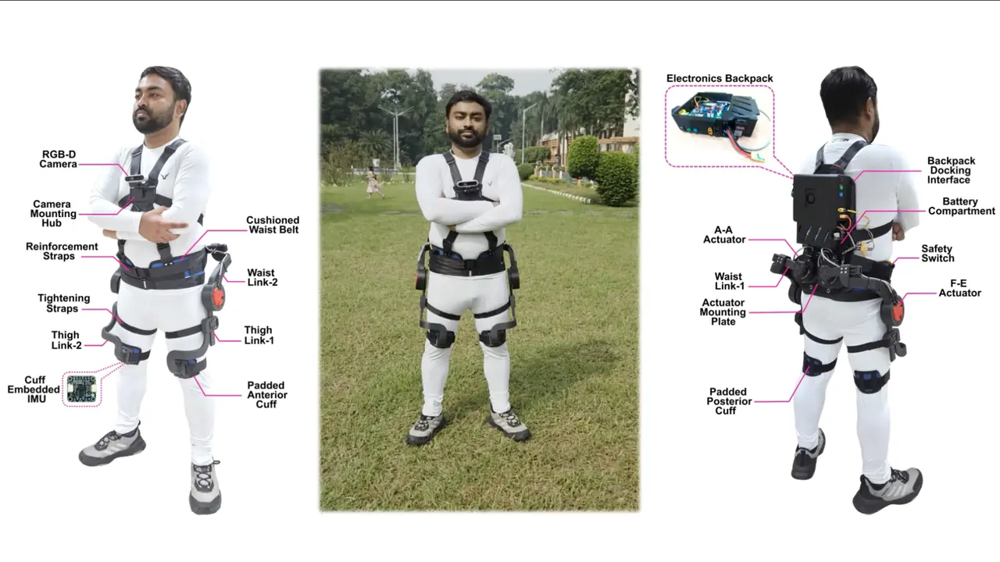
Wearable robotics
Adaptive intelligence for wearable robots
Integrating environmental perception and proprioceptive intent estimation with learning-based control, so wearable robots can adapt across tasks, environments and users.
Robotics Systems Engineer & Researcher
Wearable assistive robotics · Haptics · Human–robot interaction
About me
As a Senior Project Scientist at the Indian Institute of Technology Delhi (IIT Delhi), I conducted wearable robotics research within a programme funded by the Defence Research and Development Organisation (DRDO). I am now a Research Project Scientist at CSIR-Central Mechanical Engineering Research Institute (CSIR-CMERI), pursuing human-centred robotics research funded by the Indian Council of Medical Research (ICMR). I hold a B.Tech. in Mechanical Engineering from the National Institute of Technology Durgapur (NIT Durgapur) and carried out haptics research as a Visiting Researcher at the BioRobotics Institute, Scuola Superiore Sant’Anna (SSSA), Italy.
As a systems engineer and researcher in wearable robotics and haptic interfaces, I design and fabricate mechatronic components and develop embedded sensing, software and control. I integrate them into complete physical systems, develop and deploy machine-learning models for GPU-based edge inference, and use human-in-the-loop optimization and human trials to personalize and evaluate assistance and feedback.
My research is motivated by a practical question:
How can we build robots that are comfortable to wear, understand a person and their surroundings, and adapt the way they assist or communicate?
I am working towards a more human-centred future in robotics.

Integrating environmental perception and proprioceptive intent estimation with learning-based control, so wearable robots can adapt across tasks, environments and users.
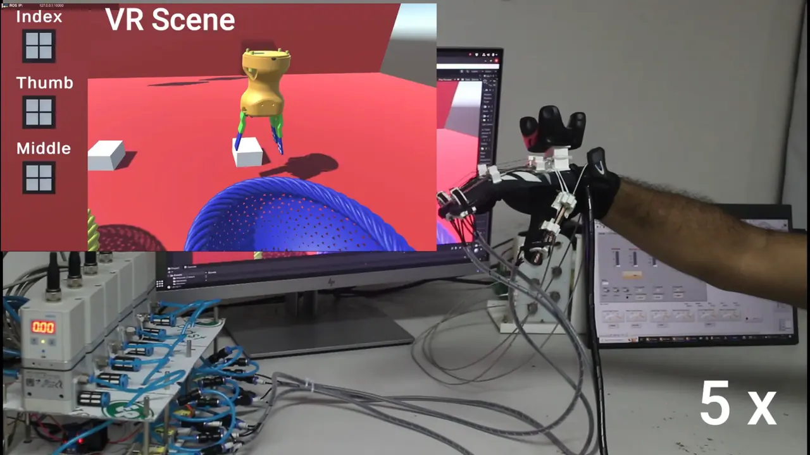
Combining tactile and kinesthetic feedback to communicate task information and support human–robot interaction and shared autonomy.
Research
11 research projects
Wearable robotics
A hip exoskeleton as a personalized haptic interface for assisted navigation
A four-actuator hip exoskeleton guides walking with gait-informed haptic cues, personalized through preference-based human-in-the-loop optimization with comfort and detectability ensured, and tested in autonomous navigation using egocentric stereo-camera SLAM.
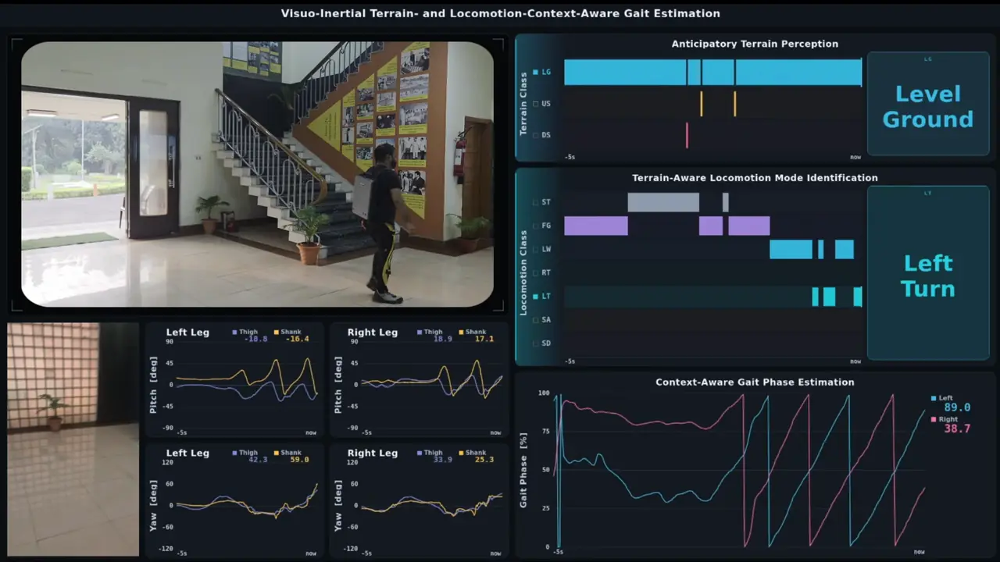
Wearable robotics
A causal visuo-inertial pipeline for terrain, locomotion, gait phase, and speed
A chest camera anticipates terrain while body-worn IMUs identify locomotion intent, and this probabilistic terrain and locomotion context drives one shared model for bilateral gait-phase and walking-speed estimation.
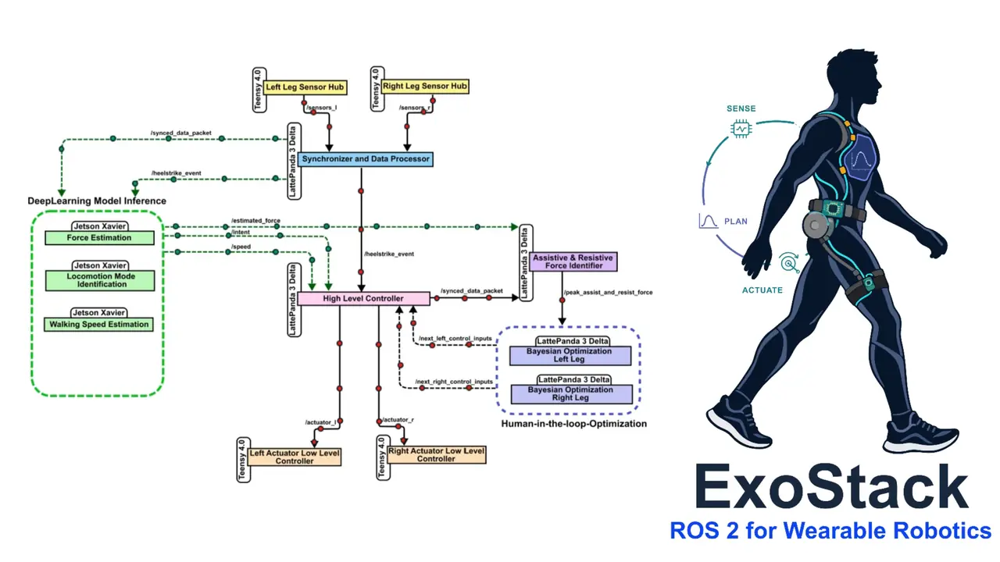
Research platforms
A modular ROS 2 architecture for wearable robots
An open-source ROS 2 framework in which a new wearable robot is configured rather than reprogrammed, with built-in human-in-the-loop optimization, benchmarked and validated across exosuits.
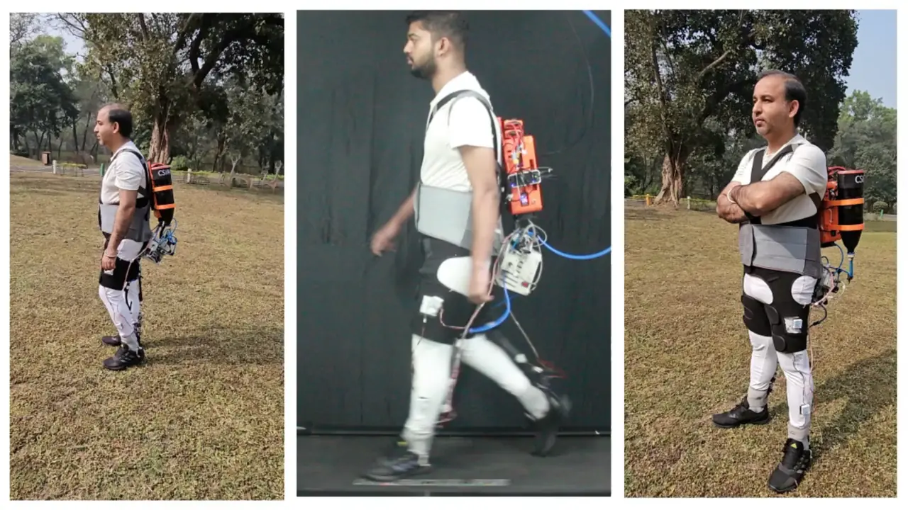
Wearable robotics
Sensorized pneumatic muscles and rapid personalization for bilateral knee-flexion assistance
An untethered textile exosuit estimates its delivered force onboard without a load cell, driving human-in-the-loop optimization within minutes per walking speed, with multi-subject sEMG confirming reduced muscle activity.
Haptics
Proprioceptive sensing with tactile and kinesthetic feedback for VR and telerobotics
A soft glove tracks finger bending and lets users feel virtual and remote objects, with pneumatic fingertip tactors for touch and tendon resistance that conveys size, shape and stiffness.
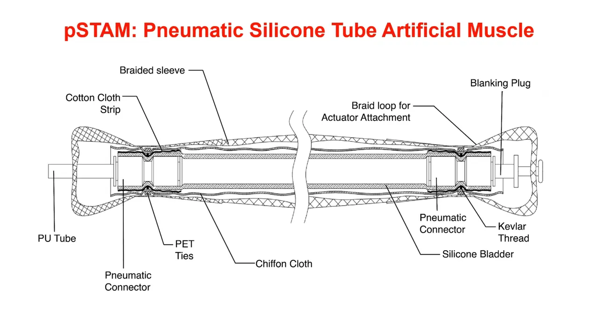
Soft robotics
Custom low-pressure pneumatic artificial muscles
Low-pressure silicone pneumatic muscles, now a granted Indian patent, taken from fabrication and characterization to neural surrogate models, hybrid control and an open-source design toolbox.
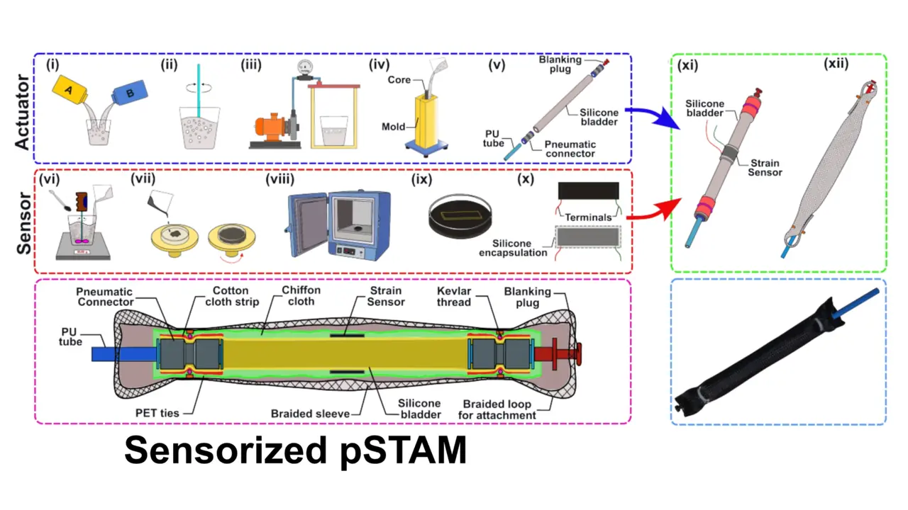
Soft robotics
Intrinsic sensing for soft robotic feedback
Embedded conductive elastomer, liquid metal or fabric lets pneumatic muscles sense their own deformation, and ML-based models turn it into contraction and transmitted force.
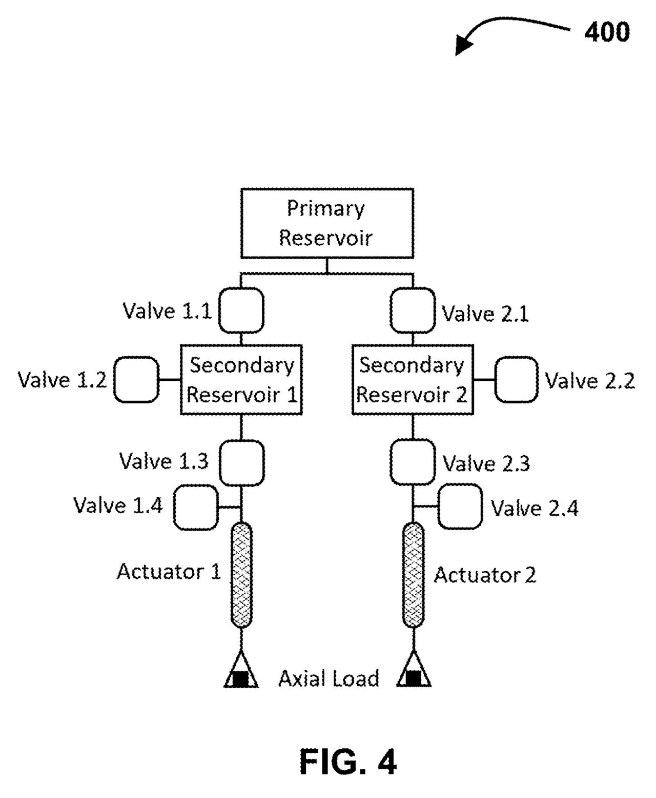
Research platforms
Data-driven, model-based air supply for exosuits and aerial manipulators
A two-stage reservoir system with data-driven pressure targets and valve timing lets exosuits and aerial manipulators run untethered on onboard air, protected by a U.S. patent application.
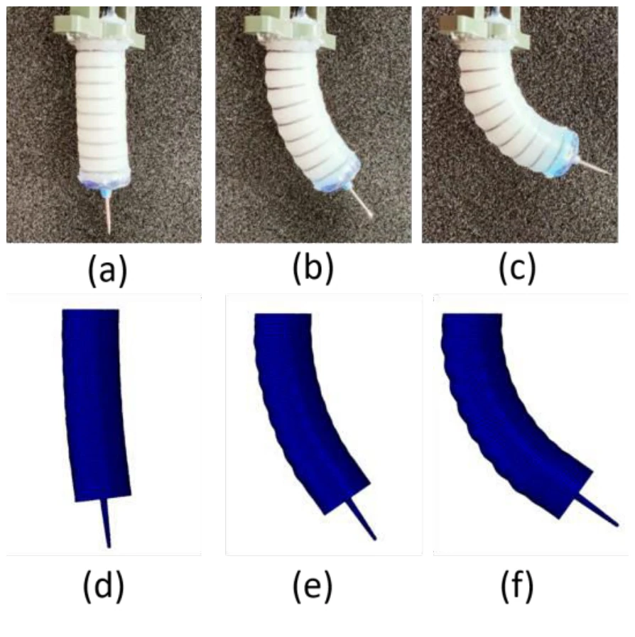
Soft robotics
Reinforced silicone actuation for multidirectional bending and interaction sensing
An O-ring-reinforced silicone steering head bends in any direction and extends to insert a needle, designed with hyperelastic FEA alongside a reinforced bending actuator with built-in force sensing.
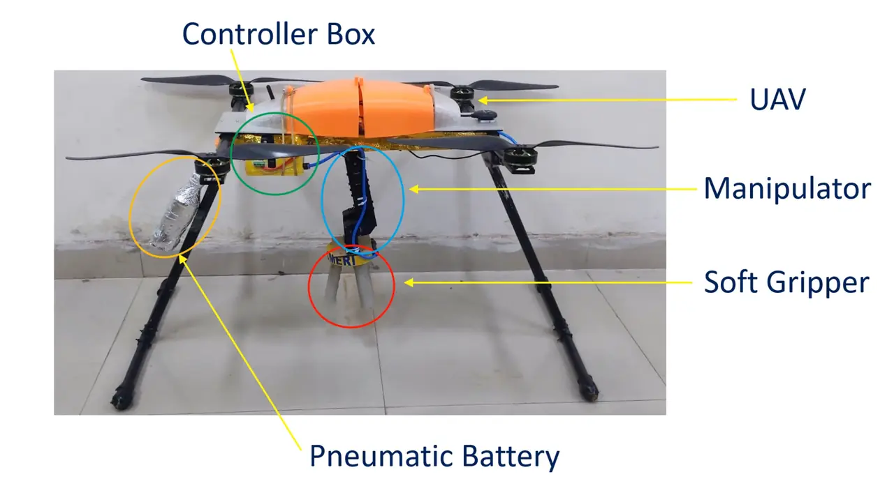
Soft robotics
A quadrotor, two-DoF manipulator, and pneumatic soft gripper
A quadrotor carrying a two-DoF arm and a pneumatic soft gripper with its own onboard air supply brings compliant grasping to aerial manipulation, tested in bench grasping and outdoor flights.
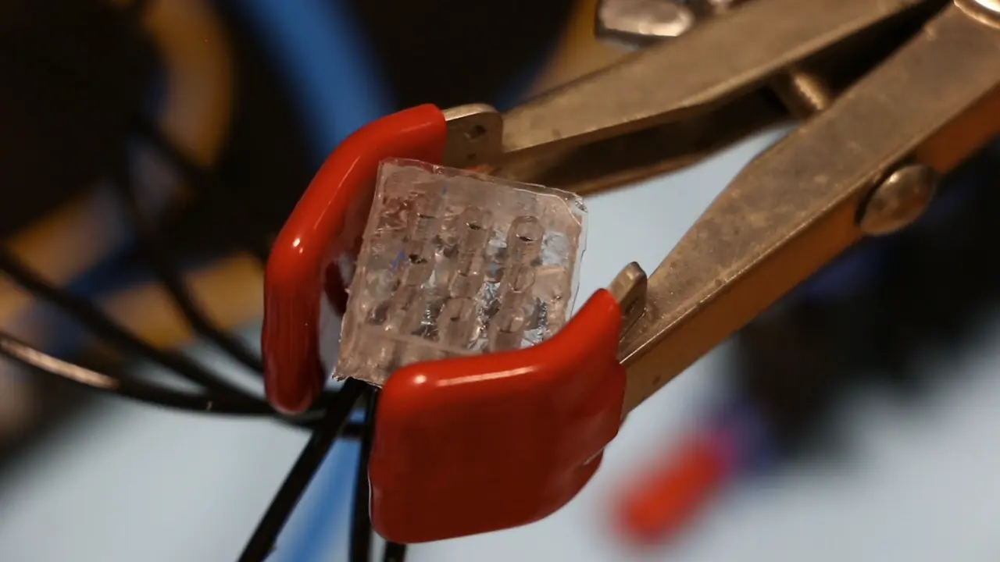
Haptics
An elastomeric tactor array for spatial haptic feedback
A 3×3 elastomeric tactor array presses spatial patterns onto the fingertip for surgical and collaborative telerobotics, shaped by finite-element analysis and validated in psychophysics.
Publications & intellectual property
IEEE Transactions on Medical Robotics and Bionics · 2026
Journal of Bionic Engineering · 2025
Vol. 22, no. 2, pp. 684–702
IEEE Robotics and Automation Letters · 2026
Submitted, 2026
Under reviewIEEE Sensors Journal · 2026
Submitted, 2026
Under reviewIEEE Robotics and Automation Practice · 2026
Submitted, 2026
Under reviewIndustrial Robot · 2023
Vol. 50, no. 1, pp. 56–69
Journal of Mechanical Science and Technology · 2022
Vol. 36, no. 9, pp. 4719–4733
U.S. and Indian patent applications · 2024
U.S. 18/604,087, filed 13 March 2024; publication US 2024/0309891 A1, 19 September 2024. Related Indian application 202311017238, filed 14 March 2023.
Patent pending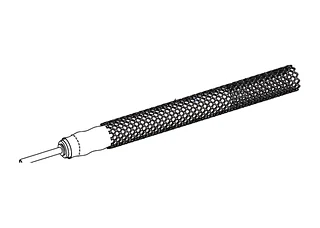
Indian patent · granted 2026
Indian Patent No. 604983, granted 5 October 2026 · Application 202211021971, filed 12 April 2022
Patent grantedIndian patent application · 2022
Application 202211071703; filed 2022
Patent pending21st International Conference on Control, Automation and Systems (ICCAS) · 2021
Jeju, South Korea · pp. 903–908
IEEE International Workshop on Metrology for Industry 4.0 & IoT · 2020
Rome, Italy · pp. 369–373
6th International Conference on Advances in Robotics (AIR ’23) · 2023
IIT Ropar, India · ACM, article 77, pp. 1–8
13th Asian Control Conference (ASCC) · 2022
Jeju, South Korea · pp. 2212–2217
IEEE 19th India Council International Conference (INDICON) · 2022
pp. 1–6
5th IEEE International Conference on Recent Advances and Innovations in Engineering (ICRAIE) · 2020
pp. 1–5
5th International Conference on Advances in Robotics (AIR ’21) · 2021
Kanpur, India · ACM, article 21, pp. 1–6
4th International Conference on Electronics, Communication and Aerospace Technology (ICECA) · 2020
pp. 339–344
IEEE International Conference on Electronics, Computing and Communication Technologies (CONECCT) · 2021
pp. 1–6
4th International Conference on Advances in Robotics (AIR ’19) · 2019
IIT Madras, Chennai, India · ACM, article 58, pp. 1–7
IOP Conference Series: Materials Science and Engineering · 2020
Vol. 912, no. 2, article 022009
5th IEEE International Conference on Recent Advances and Innovations in Engineering (ICRAIE) · 2020
pp. 1–5
IEEE International Conference on Electronics, Computing and Communication Technologies (CONECCT) · 2024
pp. 1–6
IEEE International Conference on Electronics, Computing and Communication Technologies (CONECCT) · 2021
pp. 1–6
IEEE International Conference on Electronics, Computing and Communication Technologies (CONECCT) · 2022
pp. 1–6
Education and Experiences
Durgapur, India
Research Project Scientist
Human-Centred Robotics and Cybernetics Group
On a human-centred robotics project funded by the Indian Council of Medical Research (ICMR), I build wearable robots that understand where their user is heading. XoNav guides walking through haptic cues personalized by human-in-the-loop Bayesian optimization, Tread performs locomotion intent identification from vision and IMUs, and both run on ExoStack, my open-source ROS 2 framework.
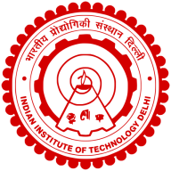
New Delhi, India
Senior Project Scientist
Department of Applied Mechanics
On a wearable robotics programme funded by the Defence Research and Development Organisation (DRDO), I led the full-stack development of a tendon-driven elbow exosuit with biosignal-based admittance control, tested in load-lifting trials. I also built an ankle exoskeleton and a synchronized gait laboratory for human-in-the-loop evaluation.
Durgapur, India
Project Assistant
Robotics and Automation Group
As a core member of a DRDO-funded soft-exosuit project from its inception, I developed SoftEXOwalk, whose self-sensing pneumatic muscles personalize knee assistance in about three minutes through human-in-the-loop optimization. The muscles became a granted Indian patent with an open-source design toolbox, and the same period produced a soft haptic glove for VR and teleoperation.
Pisa, Italy
Visiting Researcher
Neuro-Robotic Touch Laboratory · Prof. Calogero M. Oddo
I designed a pneumatic fingertip tactile display with an elastomeric tactor array to deliver touch feedback in robot-assisted laparoscopic surgery and telerobotics, shaping it with finite-element analysis and validating it through psychophysical experiments. This first international haptics experience led to a first-author IEEE paper.
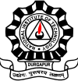
Durgapur, India
B.Tech. in Mechanical Engineering
CGPA 9.30 / 10 · Ranked 5th of 126
In my B.Tech. project with Prof. Shibendu Shekhar Roy, I developed a pneumatic soft bending actuator for soft manipulators using a hyperelastic elastomer, taking it from finite-element modelling through fabrication to force characterization. It won the Best Oral Presentation Award at AIR 2019 and started my path into soft and wearable robotics.
Recognition
Advances in Robotics (AIR 2019)2019
IIT Madras · Chennai, India
2–6 July 2019
Advances in Robotics (AIR 2023)2023
IIT Ropar · Rupnagar, India
5–8 July 2023 · Poster Session 3